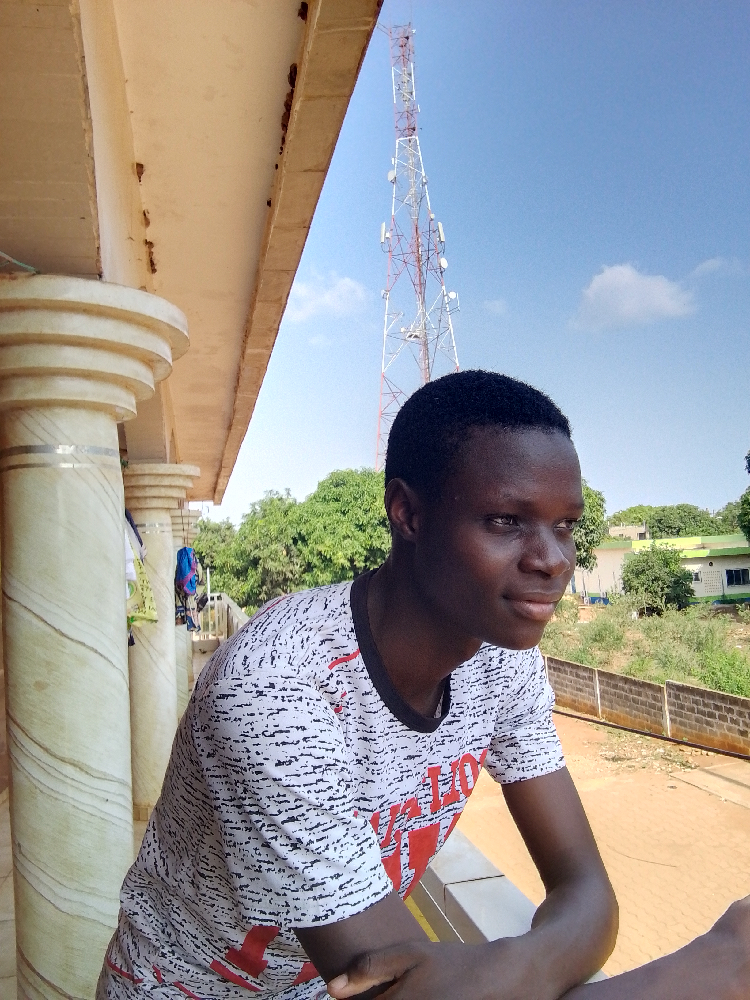
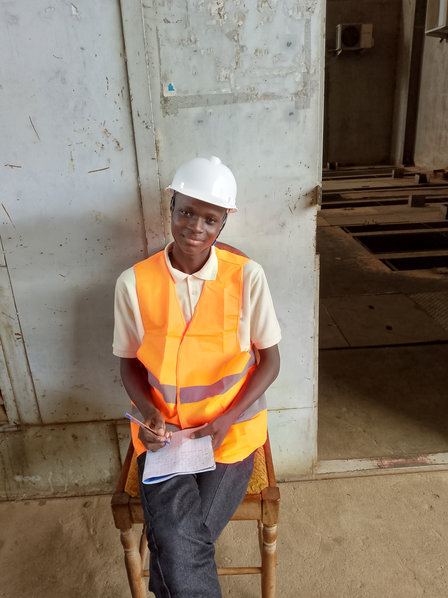
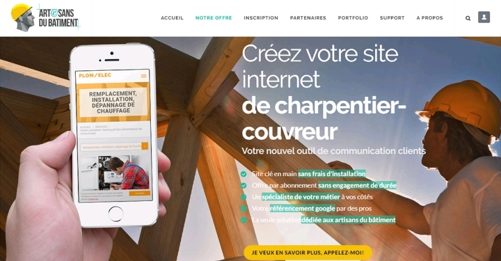

Biographie
Frédy Amoussou ANAHAHOUNDE, connu sous le nom de Frédo AN, est un passionné de développement web et d'ingénierie. Né le 4 décembre 2003 au Bénin, il poursuit une carrière académique brillante avec un intérêt marqué pour les nouvelles technologies.
Compétences
- Développement web (HTML, CSS, Java, JavaScript)
- Programmation et bases de données (MySQL, Firebase)
- Création de contenus (TikTok, réseaux sociaux)
Galerie


Portfolio

Contact
Retrouvez-moi sur :
Email | WhatsApp | Facebook